TFC 模具贴图对照（16 套）
2026-08-30 ｜ 素材
TFFH_assets/贴图整理_高清32x/模具_烧制模具，32x 最近邻放大显示 ｜ 主文档 《TFC 模具铸造三段链》｜已回滚 5 套（手斧/矿镐/手锤/镰刀/锄头，2026-08-30 用户改方案，模具只做锭），待拍板 11 套——下表"建议挂载"仅为候选，未实装三段链读法：空模具（陶工台烧出来的模子）→ 金属填充（浇完金属、敲碎模子取出的铸件毛坯）→ 成品（铁匠工坊锻打装柄后的工具，用 Core_SK 原图）。浇筑那一步同时掉炉渣，炉渣去混凝土机做矿渣混凝土。
| 模具 | 空模具 | 金属填充（毛坯） | 成品（铁匠工坊） | 状态 | 建议挂载 / 说明 |
|---|---|---|---|---|---|
| 斧头 | 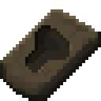 | 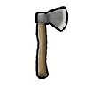 | 已接 | RK_Met_MoldHandaxe → RK_Met_CastHandaxe → TFJ_Tool_Woodcutting_Handaxe | |
| 镐 | 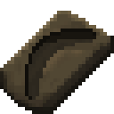 | 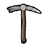 | 已接 | RK_Met_MoldPickaxe → RK_Met_CastPickaxe → TFJ_Tool_Mining_Pickaxe | |
| 锤子 | 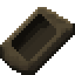 | 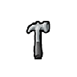 | 已接 | RK_Met_MoldHammer → RK_Met_CastHammer → TFJ_Tool_Building_Hammer | |
| 镰刀 | 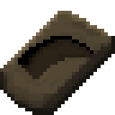 | 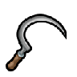 | 已接 | RK_Met_MoldSickle → RK_Met_CastSickle → TFJ_Tool_Sickle | |
| 锄头 | 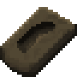 | 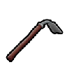 | 已接 | RK_Met_MoldHoe → RK_Met_CastHoe → TFJ_Tool_Hoe | |
| 剑刃 | 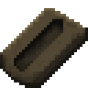 | — | 待拍板 | 剑类刃坯：可接 RK_LongSword／原版 MeleeWeapon_LongSword，做成"刃坯 + 装柄/护手"两段 | |
| 小刀刃 | 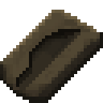 | — | 待拍板 | 匕首／刀坯：MeleeWeapon_Dagger、STL 厨师刀一类 | |
| 钉头锤 | 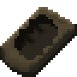 | — | 待拍板 | 钝器头：RK_Mace／中世纪锤矛类，需与"锤子工具"区分命名 | |
| 投矛头 | 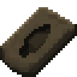 | — | 待拍板 | 投掷武器头；要先确认 CE 下有没有对应投矛 def，没有就得新建 | |
| 锯片 | 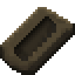 | — | 待拍板 | 锯类工具头：STL 骨锯／手工锯，接现有工具线 | |
| 铲子 | 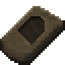 | — | 待拍板 | 铲头：可挂埋葬/清理效率工具（HSK 有埋葬体系），或作为农具第 6 件 | |
| 凿子 | 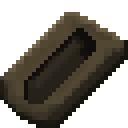 | — | 待拍板 | 石工/雕刻凿：现无对应 def，要么新建工具，要么给雕塑台当效率前置件 | |
| 探矿镐 | 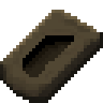 | — | 待拍板 | 探矿/地质件：可挂本 mod 的采矿点·矿井（Recipes_RK_Mining）当探测前置 | |
| 火锭 | 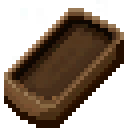 |  | — | 待拍板 | 耐火件／炉衬料：正好接《深化方案》的耐火砖 + 炉衬进度条，优先级建议最高 |
| 锭 | 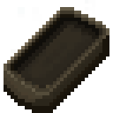 | — | 待拍板 | 通用铸锭模：把任意金属浇成标准锭，可当"跨材料统一锭"的入口 | |
| 铃铛 | 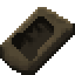 | — | 待拍板 | 装饰/畜牧件：牲畜铃、装饰铃（走"能直建就不进工作台"落成摆件更合适） |
待拍板的 11 套尚未实装，本表只做形状对照与候选挂载，不含任何已生效改动。选定后我再按同一套三段结构（制模 @陶工台 → 浇筑 @铸造厂 → 成形 @铁匠工坊）逐件补 def 与配方。